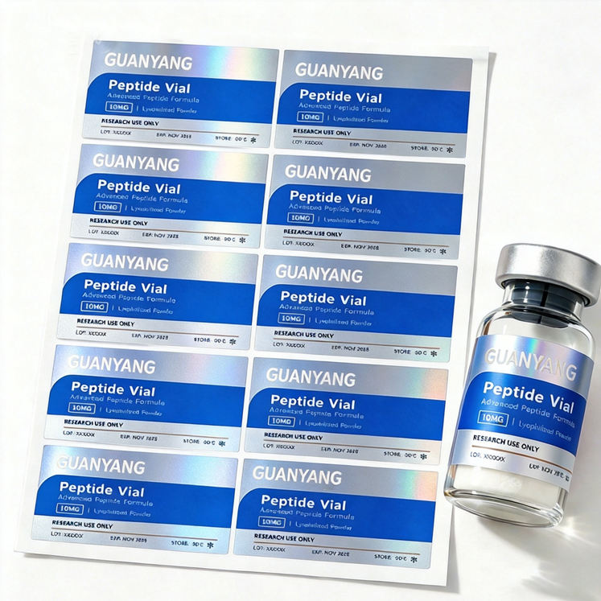
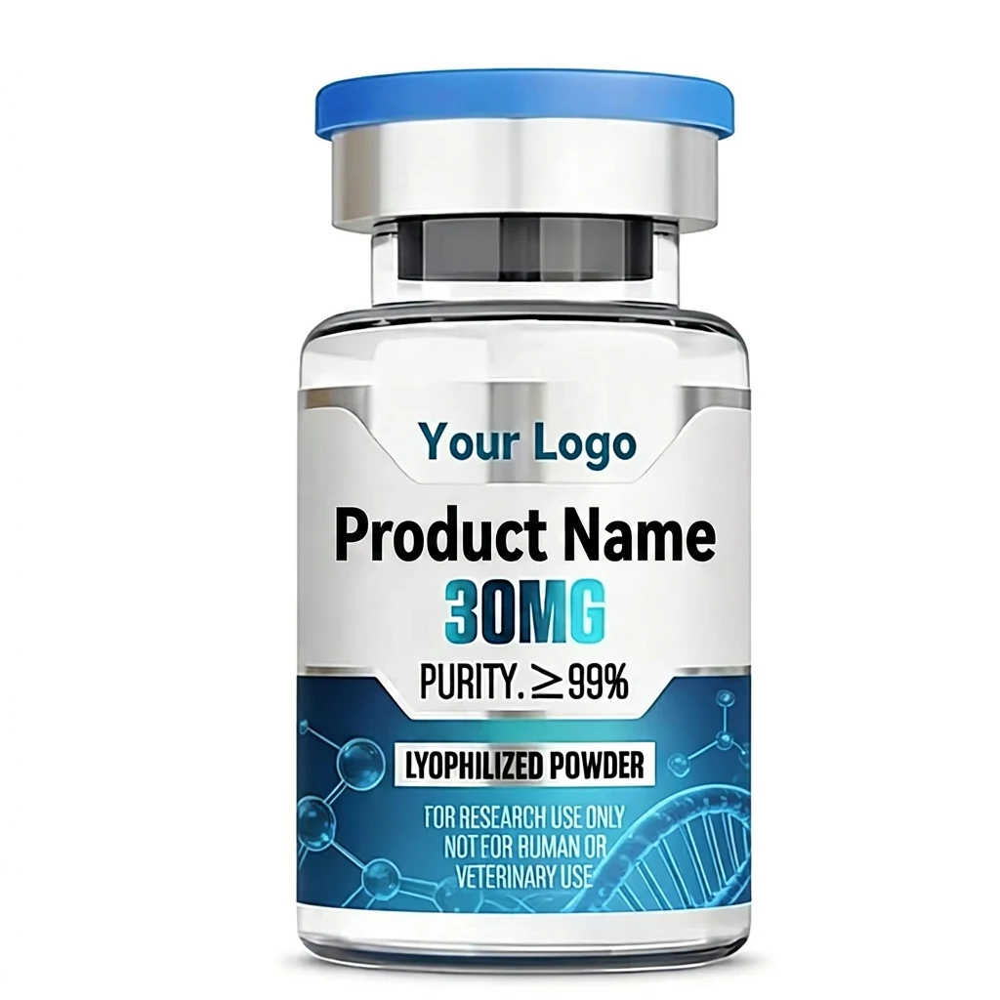
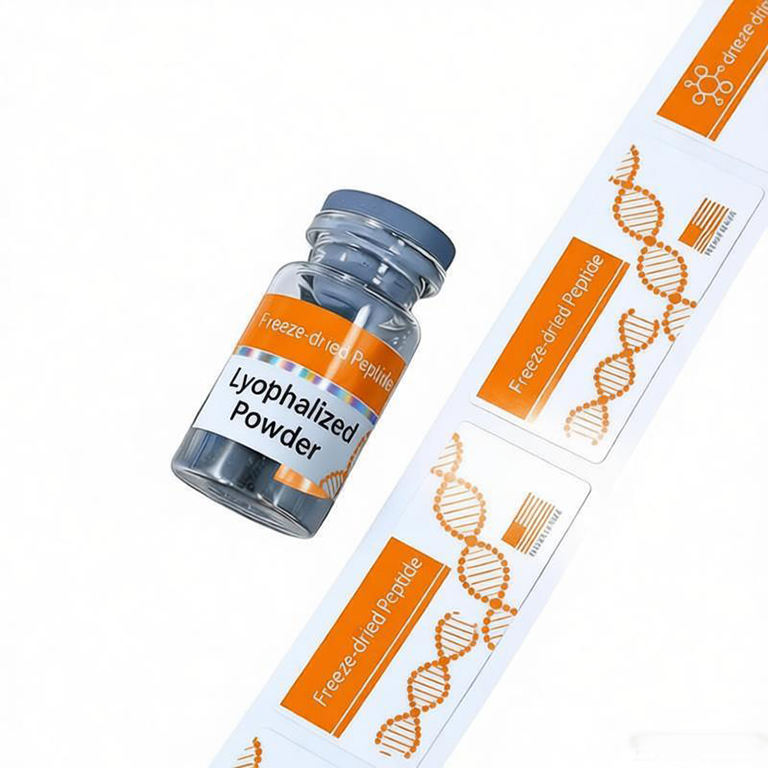
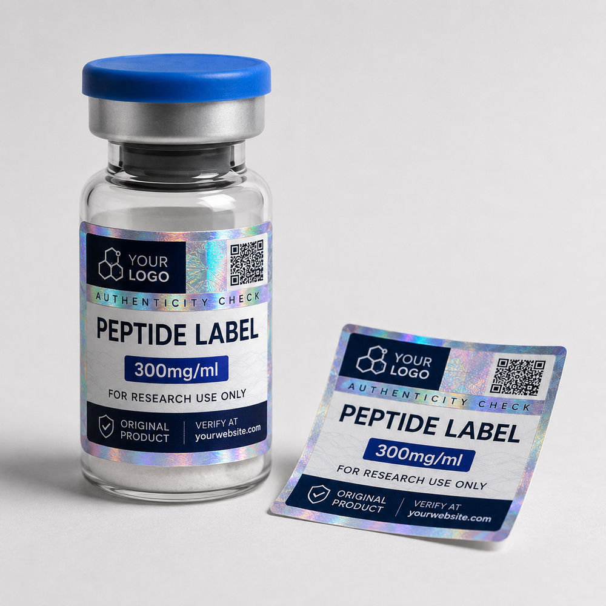
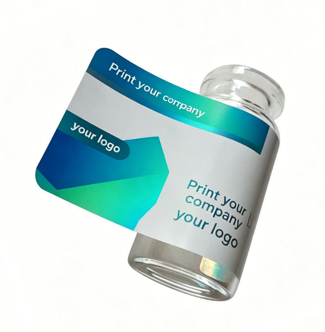
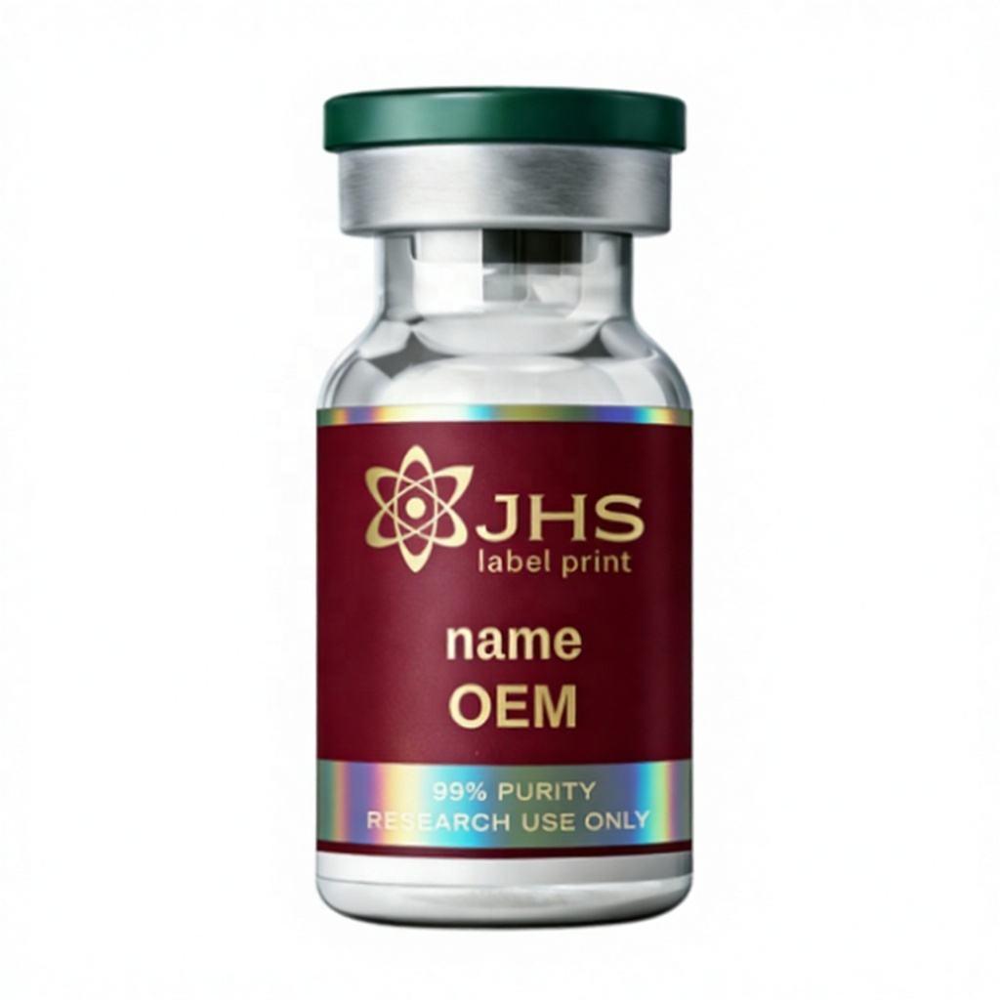
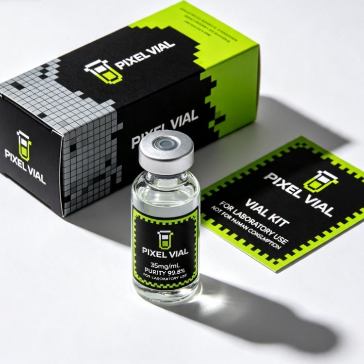

Peptide Vial and Carton Label Set
Discuss this packaging format with your dimensions, artwork and pieces per design. Construction and availability are confirmed in the project quote.
Discuss This FormatPlan custom peptide vial labels with RP Labels around your actual research packaging. Start with the vial dimensions, artwork and pieces per design, then discuss rolls or sheets and any matching box labels as part of the same project. The proposed material, supply format and proofing scope are confirmed in your written quote.

Use this short brief to bring the packaging and print requirements together:
| Project detail | What to send |
|---|---|
| Actual vial | Bottle reference, body diameter, usable straight-wall height and a photo showing the shoulder and base |
| Handling | When labels are applied, storage conditions, condensation and any water or wipe contact |
| Quantity | Each artwork name or revision and the pieces needed for that design |
| Application | Hand or machine application; for rolls, the operator's unwind view, core and maximum roll diameter |
| Artwork and data | Current files, approved text, fixed printed fields and any space reserved for later batch printing |
If some details are still open, include what you have and identify the decisions you need help with.
A vial's stated capacity does not determine its label size. Measure the surface the label will touch, including the usable height below the shoulder and the intended gap or overlap around the body. Check a full-size paper mockup on the actual vial before releasing the artwork.
The vial label size guide explains what to measure. For a straight round body, the label quote planner can organize the measurements into a starting brief; the final fit still needs the actual container.

Describe the exposure before choosing a face material, adhesive and finish. Water contact, alcohol wiping and cold storage raise different questions. Include the liquid used, contact sequence and whether the vial is dry or already chilled when labeled.
Use the water-exposure guide for wet handling, the alcohol-wipe guide for wiping requirements, and the refrigerated versus frozen guide for application and storage sequence. Agree the relevant applied-sample checks for your project, including print readability and edge condition.
For the appearance, share your preferred color series, opacity and matte, gloss, foil or holographic reference. A holographic body label provides a visual effect; a closure that needs visible opening evidence calls for a separate security seal discussion.
Tell us whether labels will be applied by hand or on a labeling line. Request the preferred roll or sheet format in your brief so its availability can be checked against the proposed construction.
For machine application, ask the operator for the core size, maximum roll diameter, label spacing and dispensing orientation. Use the roll-direction guide to agree a view of the exposed label and leading edge, rather than relying on a direction number alone.
List every design separately, even when designs share a size. If the project includes vial and carton labels, identify the two label sizes and quantities independently. The quote should distinguish printed labels from any container or box sourcing request.

Send your artwork or current reference with the measured label size and text approval stage. Mark fixed text, any requested QR or serial content, and fields that your team will print later. For later printing, include the printer and ribbon or ink details so compatibility can be discussed. Any static or item-level data printing needs an agreed scope and data handoff.
A digital proof is for reviewing the proposed layout, text, placement and print setup. Physical fit, adhesion, wiping and code readability on the vial need the relevant applied-sample checks. Confirm which design assistance, proofs and samples are included or charged in the quote. Your team approves product wording and claims; prepress layout review is not regulatory approval.
Send the vial reference and measurements, pieces per design, application method, handling conditions and current artwork. Add any matching carton labels and data requirements. Ask for the proposed construction, minimum quantity, proof and sample scope, timing and delivery terms together so you can review one clear project offer.
Prepare your vial label brief and tell us which details are ready and which still need discussion.
Selected visual references for preparing your packaging brief. Images do not establish production capability, certification or tested performance; confirm the proposed scope and sample checks in writing.

Discuss this packaging format with your dimensions, artwork and pieces per design. Construction and availability are confirmed in the project quote.
Discuss This Format
Discuss this packaging format with your dimensions, artwork and pieces per design. Construction and availability are confirmed in the project quote.
Discuss This Format
Discuss this packaging format with your dimensions, artwork and pieces per design. Construction and availability are confirmed in the project quote.
Discuss This Format
Discuss this packaging format with your dimensions, artwork and pieces per design. Construction and availability are confirmed in the project quote.
Discuss This Format
Discuss this packaging format with your dimensions, artwork and pieces per design. Construction and availability are confirmed in the project quote.
Discuss This Format
Discuss this packaging format with your dimensions, artwork and pieces per design. Construction and availability are confirmed in the project quote.
Discuss This FormatStart with bottle fit, application conditions and SKU control before approving a label roll.